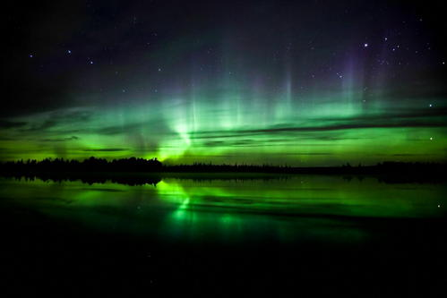
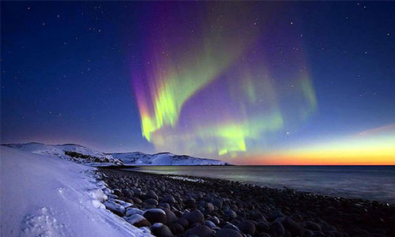
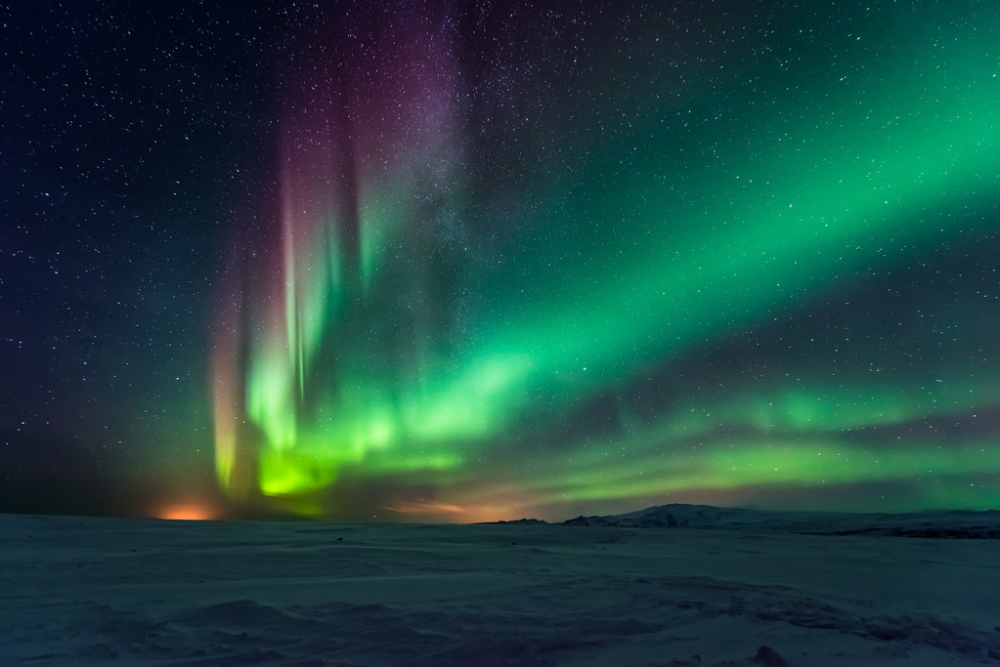
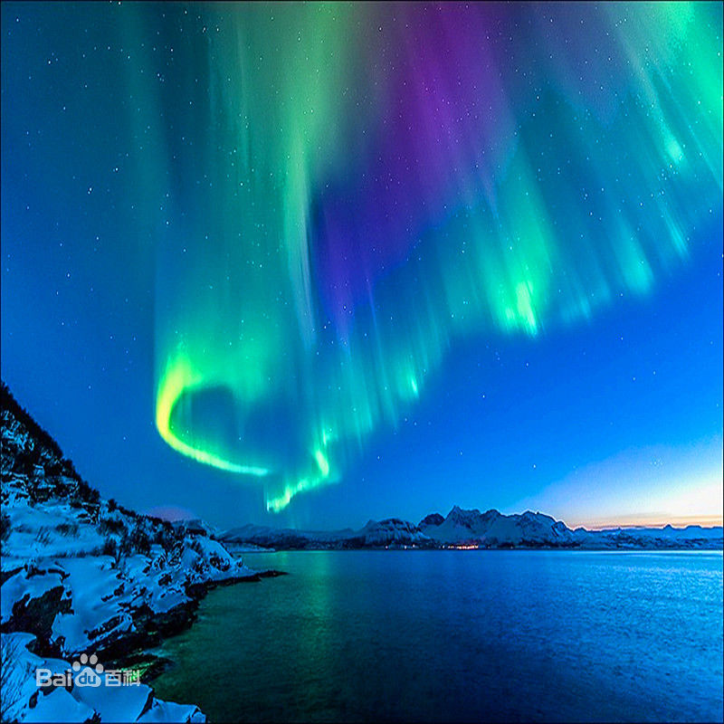
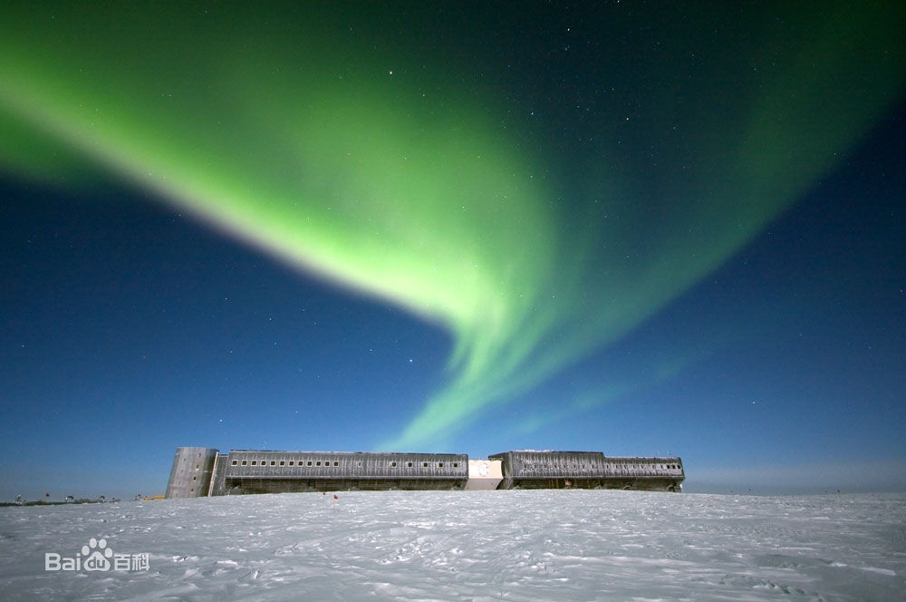

北极光，是出现于星球北极的高磁纬地区上空的一种绚丽多彩的发光现象，由来自地球磁层或太阳的高能带电粒子流（太阳风）使高层大气分子或原子激发（或电离）而产生。北极附近的阿拉斯加、北加拿大以及中国的黑龙江省大兴安岭地区漠河市是观赏北极光的最佳地点。
极光(aurora)来源于拉丁文伊欧斯一词。传说伊欧斯是希腊神话中“黎明”的化身，是希腊神泰坦的女儿，是太阳神和月亮女神的妹妹。当人类第一次仰望天际惊见北极光的那一刻开始，北极光就一直是个“谜”。长久以来，人们都各自发展出自己的极光传说，比如在芬兰语中，北极光则被称为“revontulet”，直译过来就是狐狸之火。古时的芬兰人相信，因为一只狐狸在白雪覆盖的山坡奔跑时，尾巴扫起晶莹闪烁的雪花一路伸展到天空中，从而形成了北极光。
此外，部分萨米人和西伯利亚人相信北极光来自于逝者的创伤，不过这多彩的天空并不是痛苦的征兆，相反的，而是幽灵们在后世玩球类运动或骑马奔跑时受伤所留下的血迹。而因纽特人认为“极光，是鬼神引导死者灵魂上天堂的火炬”。原住民则视“极光为神灵现身，深信快速移动的极光会发出神灵在空中踏步的声音，将取走人的灵魂，留下厄运”。在北极地区高层大气中出现的极光。
北极光，按原理在北极圈内全年晴朗的夜晚都可以观赏到，而在冬天的夜空常出现。这一自然奇观的成因虽然至今仍没有定论，但千百年来却吸引无数人仰望苍穹。北极光浩瀚、神秘，令人望而生叹，顿感人生渺小，宇宙无限。要清楚观赏北极光，选址应避开城市灯光骚扰。在拉普兰野外扎营，可以围着暖暖的篝火，一边吃茶点一边欣赏北极光。因为需要在野外长时间的守候等待，足够的防寒衣物必不可少。拉普兰北部见到北极光的几率高，约为75%。
长期以来，极光的成因一直众说纷纭。有人认为：它是地球外缘燃烧的大火；有人则认为，它是夕阳西沉后，天际映射出来的光芒；还有人认为，它是极圈的冰雪在白天吸收储存阳光之后，夜晚释放出来的一种能量。这天象之谜，直到人类将卫星火箭送上太空之后，才有了物理性、合理的解释。
本质上来说，极光是太阳风暴吹过来的带电粒子与地球高空大气中的原子与分子在地球大气层最上层(距离地面100-200公里处的高空)运作激发的光学现象。极光的形成有三大个重要过程：太阳风产生的带电粒子、地球磁场把带电粒子吸引到南北极、与大气成分运作激发。所谓“太阳风”，是太阳对宇宙不断放射的一种能量，它是由电子与质子所组成。由于太阳的激烈活动，放射出无数的带电微粒，当带电微粒流射向地球进入地球磁场的作用范围时，受地球磁场的影响，便沿着地球磁力线高速进入到南北磁极附近的高层大气中，与氧原子、氮分子等质点碰撞，因而产生了“电磁风暴”和“可见光”的现象，就成了众所瞩目的“极光”。
本质上来说，极光是原子与分子在地球大气层最上层(距离地面100-200公里处的高空)运作激发的光学现象。它的形成有三大要素：太阳风、地球磁场、大气。所谓“太阳风”，是太阳对宇宙不断放射的一种能量，它是由电子与质子所组成。由于太阳的激烈活动，放射出无数的带电微粒，当带电微粒流射向地球进入地球磁场的作用范围时，受地球磁场的影响，便沿着地球磁力线高速进入到南北磁极附近的高层大气中，与氧原子、氮分子等质点碰撞，因而产生了“电磁风暴”和“可见光”的现象，就成了众所瞩目的“极光”，
极光是一种大自然天文奇观，它没有固定的型态、颜色也不尽相同，颜色以绿、白、黄、蓝居多，偶艳丽的红紫色，曼妙多姿又神秘难测。极光的发生只有在严寒的秋冬夜晚，高纬度的地区，才有机会目睹，因为漆黑寒冷的夜晚北极光最易出现，所以最佳时刻则是11月至次年2月晚上10点到凌晨2点，有些时候可持续1小时左右。
一般来说，极光的型态可分为弧状极光、带状极光、幕状极光、放射状极光等四种。在北部出现的称为北极光，在南部出现的则称为南极光。
极光最常出没在南北磁纬度67°附近的两个环状带区域内，分别称作南极光区和北极光区。北半球以阿拉斯加、北加拿大、西伯利亚、格陵兰冰岛南端与挪威北海岸为主；而南半球则集中在南极洲附近。值得一提的是：北极附近的阿拉斯加、北加拿大是观赏极光的最佳地点，阿拉斯加的费尔班(Fairbanks)更赢得“北极光首都”的美称，以其寒冷的冬季与夏季的长时间光照而闻名，一年之中有超过200天的极光现象，人们去那里是为欣赏它那壮观景象并目睹每晚都会出现的极光奇观。如果你有机会到阿拉斯加，一定要看看那迷人的北极光，捕捉那千变万化的超级“电光秀”，您也将彻底地爱上北极光！中国最北的黑龙江省大兴安岭地区漠河县，也可以观测到北极光。
长久以来极光的神秘一直是人们汲汲想要了解与探索的，在上世纪，人们利用照相机，摄影机及卫星，才能清楚的看到及了解到太阳能流与地球磁场碰撞产生的放电现象，它是一束束电子光河，在离地球60英里的天空，释放出一百万兆瓦的光芒，但在无科学的时代，人们只有发挥无穷的想象力，来叙述这奇妙的大自然景色，因而有了许多古老相传的神秘传说。北极光名称的由来，是科学家卡森迪在反复考虑下，把这种现象称为“欧若”(Aurora)，她是古罗马神话里的织架女神，代表旭日东升前的黎明。
科学家发现了产生北极光神秘声音的地点。这种声音激发了许多民间故事，令荒野流浪者恐惧和敬畏但北极光奇怪的噼啪声和低沉的轰鸣声首次通过科学得到了解释。
芬兰阿尔托大学研究人员确定了发出这些声音的地点，然后发现这些声音来自地面以上约70米的高处。但受地球磁场干扰所致的北极光出现在地面以上约120公里的高空。研究人员在一个记录这些极光声音的观测地安装3个独立的扩音器，然后找到声音来源。他们比较了由这些扩音器捕捉到的声音，最后找出发出这些声音的位置芬兰气象研究所的科学家在这个观测地看到北极光，同时测量了地磁干扰，
阿尔托大学的尤尼托-K-莱恩教授表示：“我们的研究证实，北极光出现时，人能听到自然的极光声音，这些声音和他们所见的景象有关。以前，研究人员认为北极光离我们太远，所以听不到它产生的声音。这是真的。但我们的研究表明，这些和我们看到的北极光有关的声音很可能是由来自太阳、相同的高能粒子产生的。这些粒子造成了出现在遥远天空中的北极光。这些粒子或由它们产生的地磁干扰好像制造了更接近地面的声音。”
记录在案的极光声音类似于噼啪声和低沉的轰鸣声，持续时间很短。听到极光声音的其他人把它们描述为从远方出来的声音和爆裂声。考虑到这些不同的描述，研究人员猜测有几种机制导致了这些极光声音的形成。这些声音非常柔和，所以你必须非常认真地倾听才能听到它们，才能将它们同环境噪音区分开。
